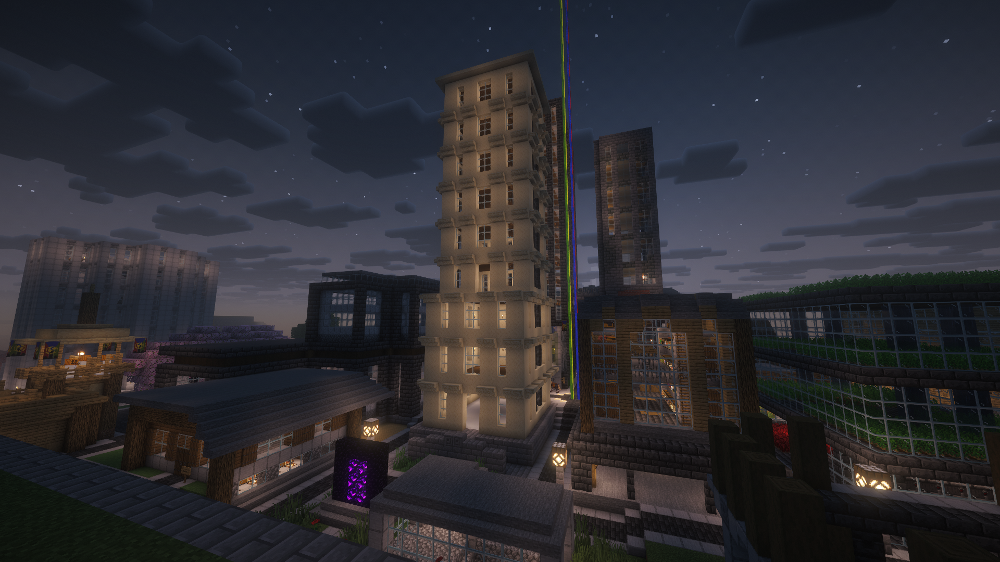
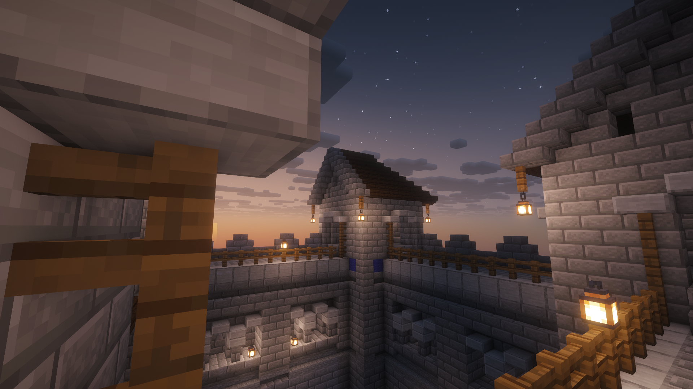

I run a few minecraft servers, mostly for me and my friends, but the public is allowed to join. Rules for
each server are below along with join methods for java & bedrock. Each server has the ViaVersion plugin
meaning that most recent versions, whether they be ahead or behind the server version, should be able to
join.
You must be whitelisted in order to play! Click here to get
whitelisted

A vanilla survival server with a world over a year old!
IP: survival.halfheart.net
IP: halfheart.net
Port: 19132
You will join the hub world instead of survival. Go through the survival portal or type
/server survival in chat.

A mostly vanilla creative server server with worldedit enabled. World is somewhat new and empty.
IP: creative.halfheart.net
IP: halfheart.net
Port: 19132
You will join the hub world instead of creative. Go through the creative portal or type
/server creative in chat.